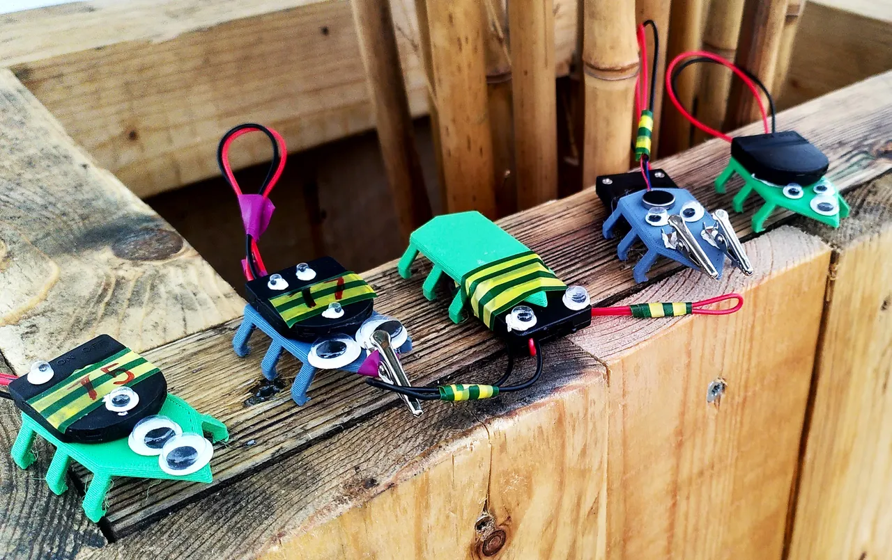

Bug Bots
In a workshop during the LuxSkills event, pupils had the opportunity to design and build their own small robot. The robot moves with the power of a vibration motor and a coin cell. The body was fabricated on a FFF Printer at our Makerspace.